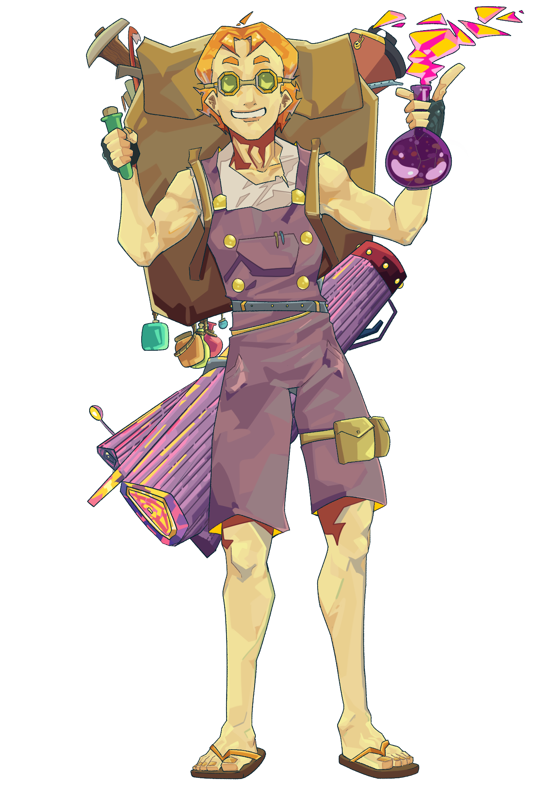
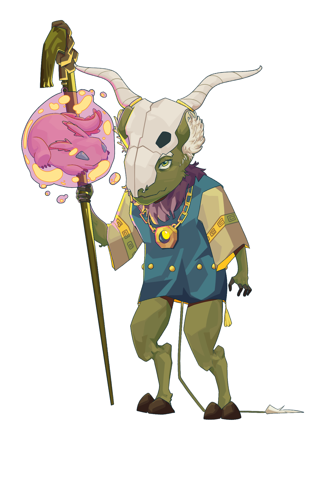
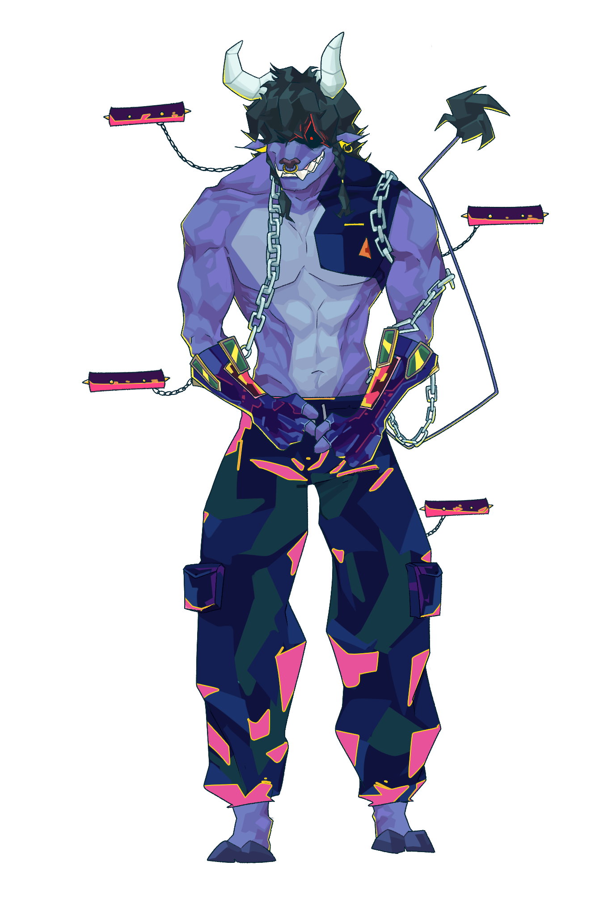
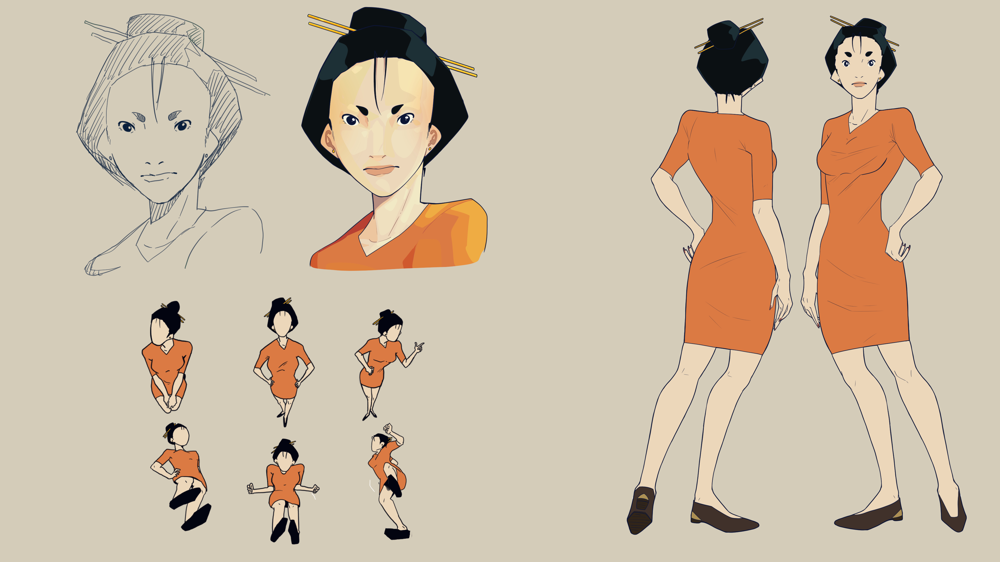
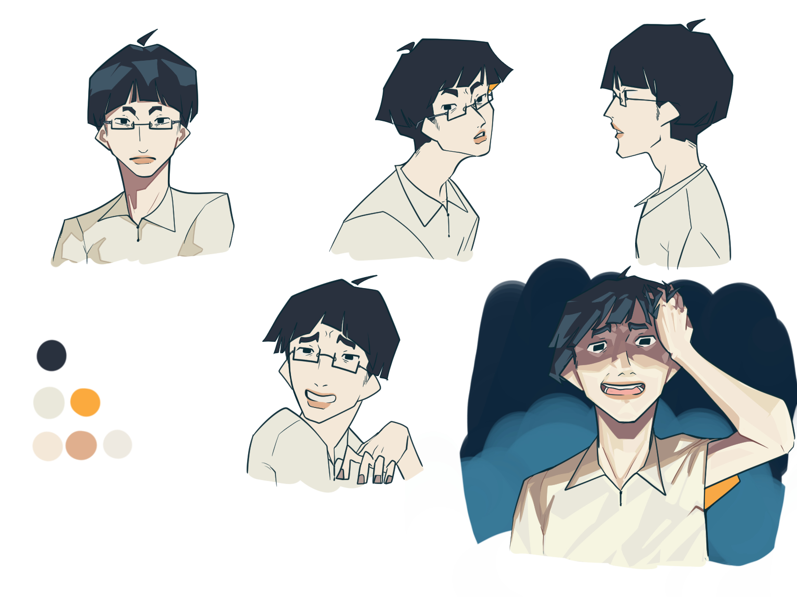

AlchemistA character design for the tabletop roleplaying game Origin Of Power, Alchemist is a subclass character in the game. the description given to me was, Alchemist, Creating many potions and poisons is the main focus of this subclass, you have extreme amounts of freedom in creating your own crazy concoctions. very fun in and out of combat. Bondercharacter design for Origin Of Power, the description given, Bonder, the true creature lover, finding and taming all kinds of creatures to aid you. although sticking to one companion, this subclass is great in making that one creature count. Cultista character design for Origin Of Power the description given, Cultist, for more evil inclined or occult adventurers. able to sacrifice people or creatures to create powerful effects. cultists unlock a small pool of spells, even if they are warriors to be honest, (personal opinion)at first it was cool but I could've done better. but it was already sold, put out, and shown by my employer so, oh well. Casey's houseThis is the house of the main character for my personal project, a comic called The Best Orphanage. This design is inspired by my grandmother's place but also with a little bit of imagination. Casey is a 30-year-old woman who lives in a very tiny house fit for only 1 person with her beloved garden just right next to it. 
Casey full reference designCasey has a very simple design, she is one of the main characters in The Best Orphanage. her design is inspired by my favorite dress but in a different color. she is also inspired by my admiration for strong-minded women, and this is how I picture that description and personality. Old man turnaround designOne of the main characters in my personal comic The Best Orphanage. is the caretaker for the orphanage that takes care of the most rare and mysterious individuals on earth. his design is just what I picture an orphanage caretaker would look like in a fantasy setting. with his robes and his headband that describe the sunset and tides. 
Pikku turnaround designPikku is one of the main villains in The Best Orphanage he is a shut-in so it explains his simple and plain design, with an expression that presents his dull and awkward attitude. 
Pikku character testIllustrating the concept of pikku's personality, he is dull, awkward, chaotic, and just weird. but, weirdly charismatic. The OrphanageA concept Home of "the god's children". A personal Comic about Children who were born with two Hearts That have the complete opposite of what each individual heart is capable of. trying to find their way to society. this comic is called The Best Orphanage (still in progress)  process and payment method is in home
process and payment method is in home
Pricesnote! The prices might change depending on the complexities and size of the designs/illustrations, That's why discussing and communicating with you is very important!!! email:magicusillustrates2.0@gmail.com |